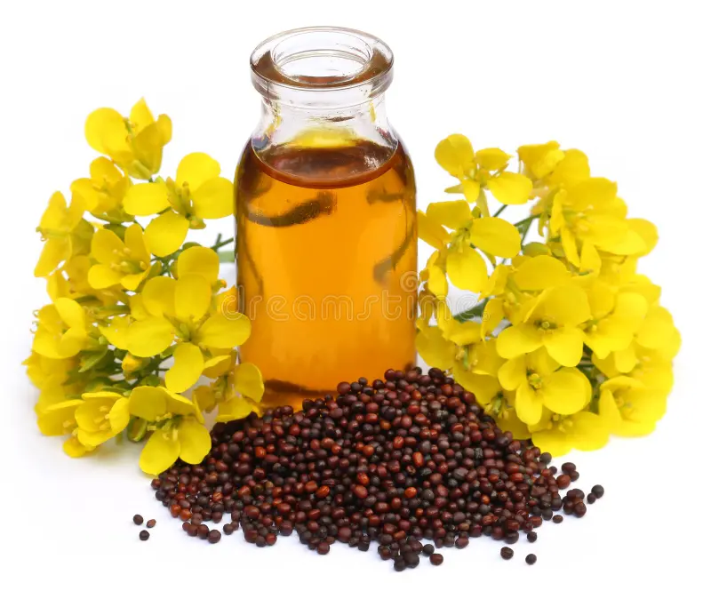

"Pure Mustard Oil - Nature's Essence"
SPH Golden Mustard
Welcome to SPH Golden Mustard, your gateway to pure, premium mustard oil. Crafted meticulously from select mustard seeds and cold-pressed to retain its natural essence, SPH Golden Mustard embodies a legacy of taste and wellness. Dive into a culinary journey where every drop enriches your dishes with its robust flavor profile and enriches your health with essential omega-3 fatty acids and antioxidants. Elevate your cooking and embrace the goodness of SPH Golden Mustard—a hallmark of tradition and purity in every drop .

About Us